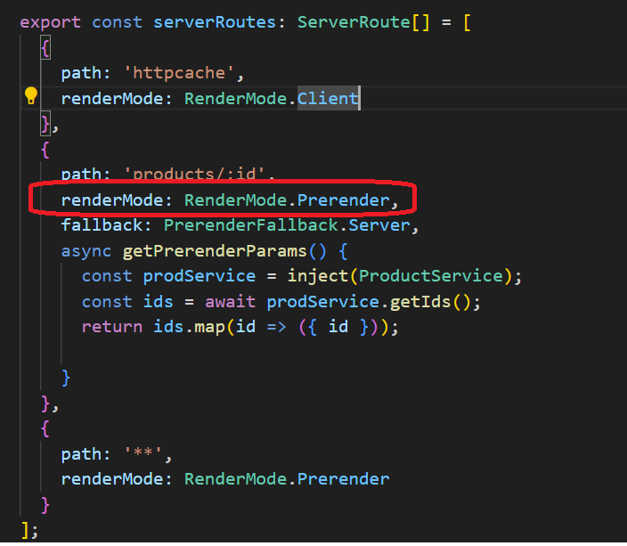

SSR, SSG and Client-side Rendering in Angular 19
For a long time, Next.js has been a leader in Server-Side Rendering (SSR) and Static Site Generation (SSG). However, with Angular 19, the framework has introduced a cleaner, more efficient way to configure SSR, SSG, and Client-Side Rendering (CSR). In this post, I'll break down why SSR is needed, how Angular 19 implements different rendering strategies, and the key performance benefits these approaches bring.
Key Concept: Hydration
Hydration is the process that restores the SSR-rendered application on the client side. This includes:
- Reusing server-rendered DOM structures.
- Persisting the application state.
- Transferring application data that was already retrieved by the server.
- Ensuring a smooth transition from server-side to client-side interactivity.
Why Use Server-Side Rendering (SSR)?
SSR comes with several advantages that significantly improve the performance, user experience, and SEO of web applications. Key Benefits of SSR:
- SEO-Friendly
- Many search engine crawlers (such as Google's or Bing's) struggle to properly index JavaScript-heavy websites.
- SSR ensures that the fully rendered page is available for indexing, leading to better search rankings.
- Improved Web Core Metrics
- SSR and SSG (build-time pre-rendering) help optimize several Web Core Vitals,
including
- Reduced Time to First Byte (TTFB) → Faster initial response from the server.
- Better LCP (Largest Contentful Paint) → Faster rendering of the main content.
- Lower CLS (Cumulative Layout Shift) → Avoids unexpected layout shifts.
- Optimized FID (First Input Delay) → Ensures faster interactivity.
- SSR and SSG (build-time pre-rendering) help optimize several Web Core Vitals,
including
npm install -g @angular/cli ng v ng new your-app-name --ssr --server-routing
When to Use SSR, SSG, or CSR?Different web pages have different requirements. Angular 19 provides flexible options to choose between SSG, SSR, and CSR based on the use case.
Scenario 1: Static Site Generation (SSG)
- Best suited for Static pages: Company pages, blogs, landing pages (hero loading pages).
-
How it works:
- Pages are pre-rendered at build time.
- Users receive a fully generated HTML file directly from the server.
- Faster initial load, lower resource usage.
- Steps:
- Configure render mode settings for routes in app.routes.server.ts 
- Build the project:
ng build
you can see the prerendered pages in the dist folder. I only prerendered 3 products
- Run the prerendered pages with client-side fallback, if product page(id=4) is not prerendered,You can observe the fetching process.
Scenario 2: Server-Side Rendering (SSR)
- Best suited for:Login pages, security-sensitive content.
- How it works: The page is dynamically generated for each request. Data is fetched on the server before rendering. The final HTML is delivered to the client with initial content already populated.
- Catching: HttpClient cached outgoing network requests when running on the server.
This information
is serialized and transferred to the browser as part of the initial HTML sent from the
server. In the browser, HttpClient checks whether it has data in the cache and if so,
reuses it instead of making a new HTTP request during initial application rendering.
So, if you click 'refresh'button on browser, you can see no fetching process on 'network' tab for the same httpRequest, since the data is already cached.
- Steps:
- Configure the render mode for specific routes in routing.ts.
- Run the project with SSR, only the first time you can see fetching process. Then if you click 'refresh' button on browser, you can see no more fetching process for the same page. You can see visulalized hydration process via Angular DEV tools in browser. You can also Check logs for hydration performance in control.
Scenario 3: Client-Side Rendering (CSR)
- Best suited for: Dashboards, user-specific content, dynamic interactions.
- How it works: Every time the page is refreshed, data is fetched from the API. The page is rendered dynamically on the client-side. This approach is best when frequent user interactions are required.
-
Steps:
- Configure the render mode for specific routes in routing.ts.
- Run the project with CSR, you cannot see any hydration process via Angualar Dev tools.
- Every time you click 'refresh' button, you can see the new fetching processes on 'network' tab
Scenario 4: Angular Incremental Hydration (@defer)
- Best suited for: Progressive web apps, optimized hydration, improving initial page load performance.
- How it works: @defer allows parts of the page to be hydrated only when needed. Reduces initial JavaScript execution time, making the page load faster.
- Types of Incremental Hydration:
- Hydration on Idle (@defer (on idle))
- Hydrates components when the browser is idle.
- Suitable for non-critical UI elements.
- Hydration on Viewport (@defer (on viewport))
- Hydrates components only when they appear in the viewport.
- Useful for below-the-fold content (e.g., FAQ sections, additional product details).
etc.
- Hydration on Idle (@defer (on idle))
- Benefits of Incremental Hydration:
- Lowers initial JavaScript execution time.
- Reduces bundle size (because @defer creates separate bundles).
- Speeds up initial page loading.
- Improves user experience by prioritizing only visible content.
Summary & Key Takeaways
Why Angular 19’s SSR, SSG, and Incremental Hydration Matter?
- Improves web performance (faster load times, reduced TTFB). In the context of web performance, TTFB (Time to First Byte) measures the time it takes for a browser to receive the first byte of data from a server after a request, indicating server responsiveness and initial loading speed.
- Enhances user experience (better interactivity, reduced layout shifts).
- Boosts SEO (ensuring proper indexing by search engines).
- Reduces initial bundle size (incremental hydration optimizations).
- Simplifies developer experience (cleaner setup, better debugging tools).
Angular 19's SSR, SSG, and @defer hydration strategies bring Next.js-like efficiency while maintaining Angular's powerful ecosystem.
Want to optimize your Angular app further? Start experimenting with SSR, SSG, CSR, and Incremental Hydration today!